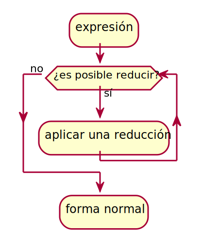
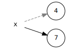

Programación funcional I
Ricardo Pérez López
IES Doñana, curso 2019/2020
1 El lenguaje de programación Python
1.1 Historia
Python fue creado a finales de los ochenta por Guido van Rossum en el Centro para las Matemáticas y la Informática (CWI, Centrum Wiskunde & Informatica), en los Países Bajos, como un sucesor del lenguaje de programación ABC.
El nombre del lenguaje proviene de la afición de su creador por los humoristas británicos Monty Python.

Python alcanzó la versión 1.0 en enero de 1994.
Python 2.0 se publicó en octubre de 2000 con muchas grandes mejoras.
Python 3.0 se publicó en septiembre de 2008 y es una gran revisión del lenguaje que no es totalmente retrocompatible con Python 2.
1.2 Características principales
Python es un lenguaje interpretado, dinámico y multiplataforma, cuya filosofía hace hincapié en una sintaxis que favorezca un código legible.
Es un lenguaje de programación multiparadigma. Esto significa que más que forzar a los programadores a adoptar un estilo particular de programación, permite varios estilos: programación orientada a objetos, programación imperativa y programación funcional.
Tiene una gran biblioteca estándar, usada para una diversidad de tareas. Esto viene de la filosofía «pilas incluidas» (batteries included) en referencia a los módulos de Python.
Es administrado por la Python Software Foundation y posee una licencia de código abierto.
La estructura de un programa se define por su anidamiento.
2 Modelo de ejecución
2.1 Modelo de ejecución
Cuando escribimos programas (y algoritmos) nos interesa abstraernos del funcionamiento detallado de la máquina que va a ejecutar esos programas.
Nos interesa buscar una metáfora, un símil de lo que significa ejecutar el programa.
De la misma forma que un arquitecto crea modelos de los edificios que se pretenden construir, los programadores podemos usar modelos que simulan en esencia el comportamiento de nuestros programas.
Esos modelos se denominan modelos de ejecución.
Los modelos de ejecución nos permiten razonar sobre los programas sin tener que ejecutarlos.
Definición:
Modelo de ejecución:
Es una herramienta conceptual que permite a los programadores razonar sobre el funcionamiento de un programa sin tener que ejecutarlo directamente en el ordenador.
Podemos definir diferentes modelos de ejecución dependiendo, principalmente, de:
El paradigma de programación utilizado (ésto sobre todo).
El lenguaje de programación con el que escribamos el programa.
Los aspectos que queramos estudiar de nuestro programa.
2.2 Modelo de sustitución
En programación funcional, un programa es una expresión y lo que hacemos al ejecutarlo es evaluar dicha expresión, usando para ello las definiciones de operadores y funciones predefinidas por el lenguaje, así como las definidas por el programador en el código fuente del programa.
La evaluación de una expresión, en esencia, es el proceso de sustituir, dentro de ella, unas sub-expresiones por otras que, de alguna manera, estén más cerca del valor a calcular, y así hasta calcular el valor de la expresión al completo.
Por ello, la ejecución de un programa funcional se puede modelar como un sistema de reescritura al que llamaremos modelo de sustitución.
La ventaja de este modelo es que no necesitamos recurrir a pensar que debajo de todo esto hay un ordenador con una determinada arquitectura hardware, que almacena los datos en celdas de la memoria principal, que ejecuta ciclos de instrucción en la CPU, que las instrucciones modifican los datos de la memoria, etc.
Todo resulta mucho más fácil que eso.
Todo se reduce a evaluar expresiones.
3 Expresiones
3.1 Concepto
Expresión:
Una expresión es una frase (secuencia de símbolos) sintáctica y semánticamente correcta según las reglas del lenguaje que estamos utilizando, cuya finalidad es la de representar o denotar un determinado objeto, al que denominamos el valor de la expresión.
El ejemplo clásico es el de las expresiones aritméticas:
Están formados por secuencias de números y símbolos que representan operaciones aritḿeticas
Denotan un valor numérico, que es el resultado de calcular el valor de la expresión tras hacer las operaciones que aparecen en ella.
La expresión
(2 * (3 + 5))denota un valor, que es el número abstracto 16.
En general, las expresiones correctamente formadas satisfacen una gramática similar a la siguiente:
<expresión> ::=(<expresión> <opbin> <expresión>)
|(<opun> <expresión>)
| <número>
| <identificador>
| <identificador>([<lista_argumentos>])
<lista_argumentos> ::= <expresión>(,<expresión>)*
<opbin> ::=+|-|*|/|//|**|%
<opun> ::=+|-Esta gramática da lugar a expresiones totalmente parentizadas, en las que cada operación a realizar va agrupada entre paréntesis, incluso aunque no sea estrictamente necesario. Por ejemplo:
(3 + (4 - 7))
3.2 Evaluación de expresiones
Ya hemos visto que la ejecución de un programa funcional consiste, en esencia, en evaluar una expresión.
Evaluar una expresión consiste en determinar el valor de la expresión. Es decir, una expresión representa o denota el valor que se obtiene al evaluarla.
En programación funcional, el significado de una expresión es su valor, y no puede ocurrir ningún otro efecto, ya sea oculto o no, en ninguna operación que se utilice para calcularlo.
Una característica de la programación funcional es que toda expresión posee un valor definido, a diferencia de otros paradigmas en los que, por ejemplo, existen las sentencias, que no poseen ningún valor.
Además, el orden en el que se evalúe no debe influir en el resultado.
Podemos decir que las expresiones:
3(1 + 2)(5 - 2)denotan todas el mismo valor (el número abstracto 3).
Es decir: todas esas expresiones son representaciones diferentes del mismo ente abstracto.
Lo que hace el intérprete es buscar la representación más simplificada o reducida posible (en este caso,
3).Por eso a menudo usamos, indistintamente, los términos reducir, simplificar y evaluar.
3.2.1 Valores, expresión canónica y forma normal
Los ordenadores no manipulan valores, sino que sólo pueden manejar representaciones concretas de los mismos.
- Por ejemplo: utilizan la codificación binaria en complemento a 2 para representar los números enteros.
Pidamos que la representación del valor resultado de una evaluación sea única.
De esta forma, seleccionemos de cada conjunto de expresiones que denoten el mismo valor, a lo sumo una que llamaremos expresión canónica de ese valor.
Además, llamaremos a la expresión canónica que representa el valor de una expresión la forma normal de esa expresión.
Con esta restricción pueden quedar expresiones sin forma normal.
Ejemplo:
De las expresiones anteriores:
3(1 + 2)(5 - 2)que denotan todas el mismo valor abstracto 3, seleccionamos una (la expresión
3) como la expresión canónica de ese valor.Igualmente, la expresión
3es la forma normal de todas las expresiones anteriores (y de cualquier otra expresión con valor 3).Es importante no confundir el valor abstracto 3 con la expresión
3que representa dicho valor.
Hay valores que no tienen expresión canónica:
Las funciones (los valores de tipo función).
El número \pi no tiene representación decimal finita, por lo que tampoco tiene expresión canónica.
Y hay expresiones que no tienen forma normal:
Si definimos inf = inf + 1, la expresión inf (que es un número) no tiene forma normal.
Lo mismo ocurre con 1\over0.
3.2.2 Formas normales y evaluación
A partir de todo lo dicho, la ejecución de un programa será el proceso de encontrar su forma normal.
Un ordenador evalúa una expresión (o ejecuta un programa) buscando su forma normal y mostrando este resultado.
Con los lenguajes funcionales los ordenadores alcanzan este objetivo a través de múltiples pasos de reducción de las expresiones para obtener otra equivalente más simple.
El sistema de evaluación dentro de un ordenador está hecho de forma tal que cuando ya no es posible reducir la expresión es porque se ha llegado a la forma normal.

3.2.3 Transparencia referencial
En programación funcional, el valor de una expresión depende, exclusivamente, de los valores de sus sub-expresiones constituyentes.
Dichas sub-expresiones, además, pueden ser sustituidas libremente por otras que tengan el mismo valor.
A esta propiedad se la denomina transparencia referencial.
En la práctica, eso significa que la evaluación de una expresión no puede provocar efectos laterales.
Formalmente, se puede definir así:
Transparencia referencial:
Si p = q, entonces f(p) = f(q).
3.3 Literales
Un literal es un valor escrito directamente en el código del programa (en una expresión).
El literal representa un valor constante.
Ejemplos:
-3,-2,-1,0,1,2,3(literales que representan números enteros)3.5,-2.7(literales que representan números reales)"hola","pepe","25",""(literales de tipo cadena)Los literales tienen que satisfacer las reglas de sintaxis del lenguaje.
Gracias a esas reglas sintácticas, el intérprete puede identificar qué literales son, qué valor representan y de qué tipo son.
Se deduce, pues, que un literal debe ser la expresión canónica del valor correspondiente.
3.4 Operaciones, operadores y operandos
En una expresión puede haber:
Datos
Operaciones a realizar sobre esos datos
A su vez, las operaciones se pueden representar en forma de:
Operadores
Funciones
Métodos
\text{En una expresión hay} \begin{cases} \text{Datos} \\ \text{Operaciones} \begin{cases} \text{Operadores} \\ \text{Funciones} \\ \text{Métodos} \end{cases} \end{cases}
Un operador es un símbolo o palabra clave que representa la realización de una operación sobre unos datos llamados operandos.
Ejemplos:
Los operadores aritméticos:
+,-,*,/(entre otros):(aquí los operandos son los números
3y4)(aquí los operandos son los números
9y8)El operador
inpara comprobar si un carácter pertenece a una cadena:(aquí los operandos son las cadenas
"c"y"barco")
3.4.1 Aridad de operadores
Los operadores se clasifican en función de la cantidad de operandos sobre los que operan en:
Unarios: operan sobre un único operando.
Ejemplo: el operador
-que cambia el signo de su operando:Binarios: operan sobre dos operandos.
Ejemplo: la mayoría de operadores aritméticos.
Ternarios: operan sobre tres operandos.
Veremos un ejemplo más adelante.
3.4.2 Paréntesis
Los paréntesis sirven para agrupar elementos dentro de una expresión y romper la ambigüedad sobre el orden en el que se han de realizar las operaciones.
Se usan, sobre todo, para hacer que varios elementos actúen como uno solo en el contexto de una operación.
Por ejemplo:
((3 + 4) * 5)vale35(3 + (4 * 5))vale23
Para reducir la cantidad de paréntesis en una expresión, se puede:
Quitar los paréntesis más externos que rodean a toda la expresión.
Acudir a un esquema de prioridades y asociatividades de operadores.
3.4.3 Prioridad de operadores
En ausencia de paréntesis, cuando un operando está afectado a derecha e izquierda por distinto operador, se aplican las reglas de la prioridad:
El
4está afectado a derecha e izquierda por distintos operadores (+y*), por lo que se aplican las reglas de la prioridad. El*tiene más prioridad que el+, así que actúa primero el*. Equivale a hacer:Si hiciéramos
el resultado sería distinto.
Ver prioridad de los operadores en Python en https://docs.python.org/3/reference/expressions.html#operator-precedence.
3.4.4 Asociatividad de operadores
En ausencia de paréntesis, cuando un operando está afectado a derecha e izquierda por el mismo operador (o distintos operadores con la misma prioridad), se aplican las reglas de la asociatividad:
El
4está afectado a derecha e izquierda por el mismo operador/, por lo que se aplican las reglas de la asociatividad. El/es asociativo por la izquierda, así que se actúa primero el operador que está a la izquierda. Equivale a hacer:Si hiciéramos
el resultado sería distinto.
En Python, todos los operadores son asociativos por la izquierda excepto el
**, que es asociativo por la derecha.
3.5 Funciones y métodos
3.5.1 Funciones
Matemáticamente, una función es una regla que asocia a cada elemento de un conjunto (el conjunto origen o dominio) un único elemento de un segundo conjunto (el conjunto imagen o codominio).
Se representa así: f: A \rightarrow B x \rightarrow f(x)
donde A es el conjunto origen y B el conjunto imagen.

La aplicación de la función f sobre el elemento x se representa por f(x) y corresponde al valor que la función asocia al elemento x en el conjunto imagen.
En la aplicación f(x), al valor x se le llama argumento de la función.
Por ejemplo:
La función valor absoluto, que asocia a cada número entero ese mismo número sin el signo (un número natural).
abs: \mathbb{Z} \rightarrow \mathbb{N} x \rightarrow abs(x)
Cuando aplicamos la función abs al valor -35 obtenemos:
abs(-35) = 35
El valor 35 es el resultado de aplicar la función abs a su argumento -35.
3.5.2 Igualdad de funciones
Dos funciones son iguales si devuelven resultados iguales para argumentos iguales.
Este principio recibe el nombre de principio de extensionalidad.
Principio de extensionalidad:
f = g si y sólo si f(x) = g(x) para todo x.
Por ejemplo, una función que calcule el doble de su argumento multiplicándolo por 2, sería exactamente igual a otra función que calcule el doble de su argumento sumándolo consigo mismo.
En ambos casos, las dos funciones devolverán siempre los mismos resultados ante los mismos argumentos.
3.5.3 Funciones con varios argumentos
El concepto de función se puede generalizar para obtener funciones con más de un argumento.
Por ejemplo, podemos definir una función max que asocie a cada par de números el máximo de los dos.
max: \mathbb{Z} \times \mathbb{Z} \rightarrow \mathbb{Z} (x,y) \rightarrow max(x,y)
Si aplicamos la función max a los argumentos 13 y -25, el resultado sería 13:
max(13, -25) = 13
3.5.4 Composición de funciones
La manera más sencilla de realizar varias operaciones sobre los mismos datos es hacer que el resultado de una operación sea la entrada de otra operación.
Se va creando así una secuencia de operaciones donde la salida de una es la entrada de la siguiente.
Es una técnica que ayuda a descomponer un problema en partes que se van resolviendo por pasos como en una cadena de montaje.
En programación funcional esto se consigue componiendo funciones, es decir, haciendo que el resultado de una función sea un argumento para otra función:

3.5.5 Métodos
Los métodos son, para la programación orientada a objetos, el equivalente a las funciones para la programación funcional.
Los métodos son como funciones que actúan sobre un valor.
La aplicación de un método se denomina invocación o llamada al método, y se escribe:
v.m()
que representa la llamada al método m sobre el valor v.
Los métodos también pueden tener argumentos como cualquier función:
v.m(a_1, a_2, ..., a_n)
En la práctica, no hay mucha diferencia entre hacer:
v.m(a_1, a_2, ..., a_n)
y hacer
m(v, a_1, a_2, ..., a_n)
Pero conceptualmente, hay una gran diferencia entre un estilo y otro:
El primero es más orientado a objetos (el objeto v «recibe» un mensaje solicitando la ejecución del método m).
En cambio, el segundo es más funcional (la función m se aplica a sus argumentos, de los cuales v es uno más).
Python es un lenguaje multiparadigma que soporta ambos estilos y por tanto dispone tanto de funciones como de métodos. Hasta que no veamos la orientación a objetos, supondremos que un método es como otra forma de escribir una función.
Por ejemplo:
Las cadenas tienen definidas el método
count()que devuelve el número de veces que aparece una subcadena dentro de la cadena:devuelve 2.
devuelve 4.
Si
count()fuese una función en lugar de un método, recibiría dos parámetros: la cadena y la subcadena. En tal caso, se usaría así:
Una operación podría tener forma de operador, de función o de método.
De hecho, en Python hay operaciones que tienen las tres formas.
Por ejemplo, la suma de dos números se puede expresar:
Mediante el operador
+:Mediante la función
int.__add__:Mediante el método
__add__ejecutado sobre uno de los números (y pasando el otro número como argumento del método):
4 Tipos de datos
4.1 Concepto
Los datos que comparten características y propiedades se agrupan en conjuntos.
Asimismo, sobre cada conjunto de valores se definen una serie de operaciones, que son aquellas que tiene sentido realizar con esos valores.
Un tipo de datos define un conjunto de valores y el conjunto de operaciones válidas que se pueden realizar sobre dichos valores.
Definición:
Tipo de un dato:
Es una característica del dato que indica el conjunto de valores al que pertenece y las operaciones que se pueden realizar sobre él.
El tipo de una expresión es el tipo del valor resultante de evaluar dicha expresión.
Ejemplos:
El tipo
inten Python define el conjunto de los números enteros, sobre los que se pueden realizar las operaciones aritméticas (suma, producto, etc.) entre otras.El tipo
strdefine el conjunto de las cadenas, sobre las que se pueden realizar otras operaciones (la concatenación, la indexación, etc.).
4.2 type
La función
typedevuelve el tipo de un valor:Es muy útil para saber el tipo de una expresión compleja:
4.3 Sistema de tipos
El sistema de tipos de un lenguaje es el conjunto de reglas que asigna un tipo a cada elemento del programa.
Exceptuando a los lenguajes no tipados (Ensamblador, código máquina, Forth…) todos los lenguajes tienen su propio sistema de tipos, con sus características.
El sistema de tipos de un lenguaje depende también del paradigma de programación que soporte el lenguaje. Por ejemplo, en los lenguajes orientados a objetos, el sistema de tipos se construye a partir de los conceptos propios de la orientación a objetos (clases, interfaces…).
4.4 Tipado fuerte vs. débil
Un lenguaje de programación es fuertemente tipado (o de tipado fuerte) si no se permiten violaciones de los tipos de datos.
Es decir, un valor de un tipo concreto no se puede usar como si fuera de otro tipo distinto a menos que se haga una conversión explícita.
Un lenguaje es débilmente tipado (o de tipado débil) si no es de tipado fuerte.
En los lenguajes de tipado débil se pueden hacer operaciones entre datos cuyo tipos no son los que espera la operación, gracias al mecanismo de conversión implícita.
Ejemplo:
Python es un lenguaje fuertemente tipado, por lo que no podemos hacer lo siguiente (da un error de tipos):
En cambio, PHP es un lenguaje débilmente tipado y la expresión anterior en PHP es perfectamente válida (y vale 5).
El motivo es que el sistema de tipos de PHP convierte implícitamente la cadena
"3"en el entero3cuando se usa en una operación de suma (+).
4.5 Errores de tipos
Cuando se intenta realizar una operación sobre un dato cuyo tipo no admite esa operación, se produce un error de tipos.
Ese error puede ocurrir cuando:
Los operandos de un operador no pertenecen al tipo que el operador necesita (ese operador no está definido sobre datos de ese tipo).
Los argumentos de una función o método no son del tipo esperado.
Por ejemplo:
es incorrecto porque el operador
+no está definido sobre un entero y una cadena (no se pueden sumar un número y una cadena).
En caso de que exista un error de tipos, lo que ocurre dependerá de si estamos usando un lenguaje interpretado o compilado:
Si el lenguaje es interpretado (Python):
El error se localizará durante la ejecución del programa y el intérprete mostrará un mensaje de error advirtiendo del mismo en el momento justo en que la ejecución alcance la línea de código errónea, para acto seguido finalizar la ejecución del programa.
Si el lenguaje es compilado (Java):
Es muy probable que el comprobador de tipos del compilador detecte el error de tipos durante la compilación del programa, es decir, antes incluso de ejecutarlo. En tal caso, se abortará la compilación para impedir la generación de código objeto erróneo.
4.6 Tipos de datos básicos
4.6.1 Números
Hay dos tipos numéricos básicos en Python: los enteros y los reales.
Los enteros se representan con el tipo
int.Sólo contienen parte entera, y sus literales se escriben con dígitos sin punto decimal (ej:
13).Los reales se representan con el tipo
float.Contienen parte entera y parte fraccionaria, y sus literales se escriben con dígitos y con punto decimal separando ambas partes (ej:
4.87). Los números en notación exponencial (2e3) también son reales.
Las operaciones que se pueden realizar con los números son los que cabría esperar (aritméticas, trigonométricas, matemáticas en general).
Los enteros y los reales generalmente se pueden combinar en una misma expresión aritmética y suele resultar en un valor real, ya que se considera que los reales contienen a los enteros.
- Ejemplo:
4 + 3.5devuelve7.5.
- Ejemplo:
4.6.2 Cadenas
Las cadenas son secuencias de cero o más caracteres codificados en Unicode.
En Python se representan con el tipo
str.- No existe el tipo carácter en Python. Un carácter en Python es simplemente una cadena que contiene un solo carácter.
Un literal de tipo cadena se escribe encerrando sus caracteres entre comillas simples (
') o dobles (").- No hay ninguna diferencia entre usar unas comillas u otras, pero si una cadena comienza con comillas simples, debe acabar también con comillas simples (y viceversa).
Ejemplos:
"hola"'Manolo'"27"
También se pueden escribir literales de tipo cadena encerrándolos entre triples comillas (
'''o""").Estos literales se usan para escribir cadenas formadas por varias líneas. La sintaxis de las triples comillas respetan los saltos de línea.
Ejemplo:
"""Bienvenido a Python"""
No es lo mismo
27que"27".27es un número entero (un literal de tipoint)."27"es una cadena (un literal de tipostr).
Una cadena vacía es aquella que no contiene ningún carácter. Se representa con el literal
''o"".
4.7 Conversión de tipos
Hemos visto que en Python las conversiones de tipos deben ser explícitas, es decir, que debemos indicar en todo momento qué dato queremos convertir a qué tipo.
Para ello existen una serie de funciones cuyo nombre coincide con el tipo al que queremos convertir el dato:
str(),int()yfloat(), entre otras.Convertir un dato a cadena suele funcionar siempre, pero convertir una cadena a otro tipo de dato puede fallar dependiendo del contenido de la cadena:
4.8 Operaciones predefinidas
4.8.1 Operadores predefinidos
4.8.1.1 Operadores aritméticos
| Operador | Descripción | Ejemplo | Resultado | Comentarios |
|---|---|---|---|---|
+ |
Suma | 3 + 4 |
7 |
|
- |
Resta | 3 - 4 |
-1 |
|
* |
Producto | 3 * 4 |
12 |
|
/ |
División | 3 / 4 |
0.75 |
Devuelve un float |
% |
Módulo | 4 % 38 % 3 |
12 |
Resto de la división |
** |
Exponente | 3 ** 4 |
81 |
Devuelve 3^4 |
// |
División entera | 4 // 3-4 // 3 |
1-2 |
?? |
4.8.1.2 Operadores de cadenas
| Operador | Descripción | Ejemplo | Resultado |
|---|---|---|---|
+ |
Concatenación | 'ab' + 'cd' 'ab' 'cd' |
'abcd' |
* |
Repetición | 'ab' * 3 3 * 'ab' |
'ababab' 'ababab' |
[0] |
Primer carácter | 'hola'[0] |
'h' |
[1:] |
Resto de cadena | 'hola'[1:] |
'ola' |
4.8.2 Funciones predefinidas
| Función | Descripción | Ejemplo | Resultado |
|---|---|---|---|
abs(n) |
Valor absoluto | abs(-23) |
23 |
len(cad) |
Longitud de la cadena | len('hola') |
4 |
max(n_1(,n_2)*) |
Valor máximo | max(2, 5, 3) |
5 |
min(n_1(,n_2)*) |
Valor mínimo | min(2, 5, 3) |
2 |
round(n[,p]) |
Redondeo | round(23.493)round(23.493, 1) |
2323.5 |
type(v) |
Tipo del valor | type(23.5) |
<class'float'> |
4.8.2.1 Funciones matemáticas
Python incluye una gran cantidad de funciones matemáticas agrupadas dentro del módulo
math.Los módulos en Python son conjuntos de funciones (y más cosas) que se pueden importar dentro de nuestra sesión o programa.
Son la base de la programación modular, que ya estudiaremos.
Para importar una función de un módulo se puede usar la orden
from. Por ejemplo, para importar la funcióngcd(que calcula el máximo común divisor de dos números) se haría:También se puede importar directamente el módulo en sí:
La lista completa de funciones que incluye el módulo
mathse puede consultar en su documentación:
4.8.3 Métodos predefinidos
Igualmente, en la documentación podemos encontrar una lista de métodos interesantes que operan con datos de tipo cadena:
https://docs.python.org/3/library/stdtypes.html#string-methods
4.9 Actividades
Representar, según el modelo de sustitución, la evaluación las siguientes expresiones, aplicando paso a paso la reducción que corresponda. Indicar también el tipo del valor resultante:
3 + 6 * 148 + 7 * 3.0 + 4 * 6–4 * 7 + 2 ** 3 / 4 – 54 / 2 * 3 / 6 + 6 / 2 / 1 / 5 ** 2 / 4 * 2
Convertir en expresiones aritméticas algorítmicas las siguientes expresiones algebraicas:
5\cdot(x + y)
a^2 + b^2
\frac{x + y}{u + \frac{w}{a}}
\frac{x}{y}\cdot(z + w)
Determinar, según las reglas de prioridad y asociatividad del lenguaje Python, qué paréntesis sobran en las siguientes expresiones. Reescribirlas sin los paréntesis sobrantes. Calcular su valor y deducir su tipo:
(8 + (7 * 3) + 4 * 6)–(2 ** 3)(33 + (3 * 4)) / 52 ** (2 * 3)(3.0) + (2 * (18 – 4 ** 2))(16 * 6) – (3) * 2
Usar la función
math.sqrtpara escribir dos expresiones en Python que calculen las dos soluciones a la ecuación de segundo grado ax^2+bx+c=0.Recordar que las soluciones son:
x_1 = -b + \frac{\sqrt{b^2-4ac}}{2a},\quad x_2 = -b - \frac{\sqrt{b^2-4ac}}{2a}
Evaluar las siguientes expresiones o decir si es una expresión incorrecta:
9 – 5 – 32 // 3 + 3 / 59 // 2 / 57 % 5 % 37 % (5 % 3)(7 % 5) % 3(7 % 5 % 3)((12 + 3) // 2) / (8 – (5 + 1))12 / 2 * 3math.sqrt(math.cos(4)math.cos(math.sqrt(4))math.trunc(815.66) + round(815.66)
Escribir las siguientes expresiones algorítmicas como expresiones algebraicas:
b ** 2 – 4 * a * c3 * x ** 4 – 5 * x ** 3 + x * 12 – 17(b + d) / (c + 4)(x ** 2 + y ** 2) ** (1 / 2)
5 Álgebra de Boole
5.1 El tipo de dato booleano
Un dato lógico o booleano es aquel que puede tomar uno de dos posibles valores, que se denotan normalmente como verdadero y falso.
Esos dos valores tratan de representar los dos valores de verdad de la lógica y el álgebra booleana.
Su nombre proviene de George Boole, matemático que definió por primera vez un sistema algebraico para la lógica a mediados del S. XIX.
En Python, el tipo de dato lógico se representa como
booly sus posibles valores sonFalseyTrue(con la inicial en mayúscula).Esos dos valores son formas especiales para los enteros
0y1, respectivamente.
5.2 Operadores relacionales
Los operadores relacionales son operadores que toman dos operandos (que usualmente deben ser del mismo tipo) y devuelven un valor booleano.
Los más conocidos son los operadores de comparación, que sirven para comprobar si un dato es menor, mayor o igual que otro, según un orden preestablecido.
Los operadores de comparación que existen en Python son:
< > <= >= == !=Por ejemplo:
5.3 Operadores lógicos
Las operaciones lógicas se representan mediante operadores lógicos, que son aquellos que toman uno o dos operandos booleanos y devuelven un valor booleano.
Las operaciones básicas del álgebra de Boole se llaman suma, producto y complemento.
En lógica proposicional (un tipo de lógica matemática que tiene estructura de álgebra de Boole), se llaman:
Operación Operador Disyunción \lor Conjunción \land Negación \neg En Python se representan como
or,andynot, respectivamente.
5.3.1 Tablas de verdad
Una tabla de verdad es una tabla que muestra el valor lógico de una expresión compuesta, para cada uno de los valores lógicos que puedan tomar sus componentes.
Se usan para definir el significado de las operaciones lógicas y también para verificar que se cumplen determinadas propiedades.
Las tablas de verdad de los operadores lógicos son:
| A | B | A\lor{}B |
|---|---|---|
| F | F | F |
| F | V | V |
| V | F | V |
| V | V | V |
| A | B | A\land{}B |
|---|---|---|
| F | F | F |
| F | V | F |
| V | F | F |
| V | V | V |
| A | \neg{}A |
|---|---|
| F | V |
| V | F |
Que traducido a Python sería:
A |
B |
A or B |
|---|---|---|
False |
False |
False |
False |
True |
True |
True |
False |
True |
True |
True |
True |
A |
B |
A and B |
|---|---|---|
False |
False |
False |
False |
True |
False |
True |
False |
False |
True |
True |
True |
A |
not A |
|---|---|
False |
True |
True |
False |
5.4 Axiomas
Ley asociativa: \begin{cases} \forall a,b,c \in \mathfrak{B}: (a \lor b) \lor c = a \lor (b \lor c) \\ \forall a,b,c \in \mathfrak{B}: (a \land b) \land c = a \land (b \land c) \end{cases}
Ley conmutativa: \begin{cases} \forall a,b \in \mathfrak{B}: a \lor b = b \lor a \\ \forall a,b \in \mathfrak{B}: a \land b = b \land a \end{cases}
Ley distributiva: \begin{cases} \forall a,b,c \in \mathfrak{B}: a \lor (b \land c) = (a \lor b) \land (a \lor c) \\ \forall a,b,c \in \mathfrak{B}: a \land (b \lor c) = (a \land b) \lor (a \land c) \end{cases}
Elemento neutro: \begin{cases} \forall a \in \mathfrak{B}: a \lor F = a \\ \forall a \in \mathfrak{B}: a \land V = a \end{cases}
Elemento complementario: \begin{cases} \forall a \in \mathfrak{B}; \exists \lnot a \in \mathfrak{B}: a \lor \lnot a = V \\ \forall a \in \mathfrak{B}; \exists \lnot a \in \mathfrak{B}: a \land \lnot a = F \end{cases}
Luego (\mathfrak{B},\lnot,\lor,\land) es un álgebra de Boole.
5.4.1 Traducción a Python
Ley asociativa:
Ley conmutativa:
Ley distributiva:
Elemento neutro:
Elemento complementario:
5.5 Teoremas fundamentales
Ley de idempotencia: \begin{cases} \forall a \in \mathfrak{B}: a \lor a = a \\ \forall a \in \mathfrak{B}: a \land a = a \end{cases}
Ley de absorción: \begin{cases} \forall a \in \mathfrak{B}: a \lor V = V \\ \forall a \in \mathfrak{B}: a \land F = F \end{cases}
Ley de identidad: \begin{cases} \forall a \in \mathfrak{B}: a \lor F = a \\ \forall a \in \mathfrak{B}: a \land V = a \end{cases}
Ley de involución: \begin{cases} \forall a \in \mathfrak{B}: \lnot \lnot a = a \\ \lnot V = F \\ \lnot F = V \end{cases}
Leyes de De Morgan: \begin{cases} \forall a,b \in \mathfrak{B}: \lnot ({a \lor b}) = \lnot a \land \lnot b \\ \forall a,b \in \mathfrak{B}: \lnot ({a \land b}) = \lnot a \lor \lnot b \end{cases}
5.5.1 Traducción a Python
Ley de idempotencia:
Ley de absorción:
Ley de identidad:
Ley de involución:
Leyes de De Morgan:
5.6 El operador ternario
Las expresiones lógicas (o booleanas) se pueden usar para comprobar si se cumple una determinada condición.
Las condiciones en un lenguaje de programación se representan mediante expresiones lógicas cuyo valor (verdadero o falso) indica si la condición se cumple o no se cumple.
Con el operador ternario podemos hacer que el resultado de una expresión varíe entre dos posibles opciones dependiendo de si se cumple o no una condición.
El operador ternario se llama así porque es el único operador en Python que actúa sobre tres operandos.
Su sintaxis es:
<expr_condicional> ::= <valor_si_cierto>if<condición>else<valor_si_falso>donde:
<condición> debe ser una expresión lógica
<valor_si_cierto> y <valor_si_falso> pueden ser expresiones de cualquier tipo
El valor de la expresión completa será <valor_si_cierto> si la <condición> es cierta; en caso contrario, su valor será <valor_si_falso>.
Ejemplo:
evalúa a
25.
5.6.1 Actividad
- ¿Cuál es la asociatividad del operador ternario? Demostrarlo.
6 Definiciones
6.1 Definiciones
Introduciremos ahora en nuestro lenguaje una nueva instrucción (técnicamente es una sentencia) con la que vamos a poder hacer definiciones.
A esa sentencia (en este momento) la llamaremos definición, y expresa el hecho de que un nombre representa un valor.
Las definiciones tienen la siguiente sintaxis:
<definición> ::= <identificador>=<expresión>Por ejemplo:
A partir de ese momento, el identificador
xrepresenta el valor25.Y si
xvale25, la expresión2 + x * 3vale77.
6.2 Identificadores y ligaduras (binding)
Los identificadores son los nombres o símbolos que representan a los elementos del lenguaje.
Cuando hacemos una definición, lo que hacemos es asociar un identificador con un valor.
Esa asociación se denomina ligadura (o binding).
Por esa razón, también se dice que una definición es una ligadura.
También decimos que el identificador está ligado (bound).

En un lenguaje funcional puro, un identificador ya ligado no se puede ligar a otro valor. Por ejemplo, lo siguiente daría un error:

Python no es un lenguaje funcional puro, por lo que se permite volver a ligar el mismo identificador a otro valor distinto (rebinding).
Eso hace que se pierda el valor anterior.
Por ahora, no lo hagamos.
6.2.1 Reglas léxicas
Cuando hacemos una definición debemos tener en cuenta ciertas cuestiones relativas al identificador:
¿Cuál es la longitud máxima de un identificador?
¿Qué caracteres se pueden usar?
¿Se distinguen mayúsculas de minúsculas?
¿Coincide con una palabras clave o reservada?
Palabra clave: palabra que forma parte de la sintaxis del lenguaje.
Palabra reservada: palabra que no puede emplearse como identificador.
6.3 Evaluación de expresiones con ligaduras
Podemos usar un identificador ligado dentro de una expresión (siempre que la expresión sea una expresión válida según las reglas del lenguaje, claro está):
Intentar usar en una expresión un identificador no ligado provoca un error (nombre no definido):
Podemos hacer:
En este caso estamos ligando a
yel valor que tienex.xeycomparten valor.

6.3.1 Marcos (frames)
Un marco (del inglés frame) es un conjunto de ligaduras.
En un marco, un identificador sólo puede tener como máximo una ligadura.
En cambio, ese mismo identificador puede estar ligado a diferentes valores en diferentes marcos.
La existencia de uno o varios marcos dependerá de la estructura del programa, es decir, que ciertas construcciones del lenguaje crean sus propios marcos.
- Por ejemplo, cuando definimos una función, dicha función llevará asociada su propio marco.
El marco global es un marco que siempre existe en cualquier punto del programa y contiene las ligaduras definidas fuera de cualquier construcción o estructura del mismo.
- Por ahora es el único marco que existe para nosotros.
En un momento dado, un marco contendrá las ligaduras que se hayan definido hasta ese momento en el contexto asociado a ese marco:
>>> x Traceback (most recent call last): File "<stdin>", line 1, in <module> NameError: name 'x' is not defined >>> x = 25 >>> x 25Aquí estamos trabajando con el marco global (el único que existe hasta ahora para nosotros).
En la línea 1, el identificador
xaún no está ligado, por lo que su uso genera un error (el marco global no contiene hasta ahora ninguna ligadura parax).En la línea 6, en cambio, el identificador puede usarse sin error ya que ha sido ligado previamente en la línea 5 (el marco global ahora contiene una ligadura para
xcon el valor 25).


6.4 Entorno (environment)
Un entorno (del inglés, environment) es una secuencia de marcos que contienen todas las ligaduras válidas en un punto concreto del programa.
Es decir, el entorno nos dice qué identificadores son accesibles en un momento dado, y con qué valores están ligados.
El entorno, por tanto, depende del punto del programa en el que se calcule.
Como por ahora sólo tenemos un marco, que es el marco global, nuestro entorno sólo podrá tener un único marco, es decir, que el entorno coincidirá con el marco global.
La cosa cambiará en cuanto empecemos a crear funciones.
6.5 Tipo de un identificador
Cuando un identificador está ligado a un valor, a efectos prácticos el identificador actúa como si fuera el valor.
Como cada valor tiene un tipo de dato asociado, también podemos hablar del tipo de un identificador.
El tipo de un identificador es el tipo del dato con el que está ligado.
Si un identificador no está ligado, no tiene sentido preguntarse qué tipo de dato tiene.
6.6 Scripts
Cuando tenemos varias definiciones o muy largas resulta tedioso tener que introducirlas una y otra vez en el intérprete interactivo.
Lo más cómodo es teclearlas juntas dentro un archivo que luego cargaremos desde dentro del intérprete.
Ese archivo se llama script y, por ahora, contendrá una lista de las definiciones que nos interese usar en nuestras sesiones interactivas con el intérprete.
Los nombres de archivo de los scripts en Python llevan extensión
.py.Para cargar un script en nuestra sesión usamos la orden
from. Por ejemplo, para cargar un script llamadodefiniciones.py, usaremos:
6.7 Ámbito de una ligadura
El ámbito de una ligadura es la porción del programa en la que dicha ligadura tiene validez.
Es un concepto nada trivial y, a medida que vayamos incorporando nuevos elementos al lenguaje, el concepto de ámbito irá cambiando para tener en cuenta más condicionantes.
Por ahora, diremos que el ámbito de una ligadura abarca desde su propia definición hasta el final del script (o el final de la sesión actual en el intérprete interactivo).
7 Documentación interna
7.1 Identificadores significativos
Se recomienda usar identificadores descriptivos.
Es mejor usar:
que
aunque ambos programas sean equivalentes en cuanto al efecto que producen y el resultado que generan.
Si el identificador representa varias palabras, se puede usar el carácter de guión bajo (
_) para separarlas y formar un único identificador:
7.2 Comentarios
Los comentarios en Python empiezan con el carácter
#y se extienden hasta el final de la línea.Los comentarios pueden aparecer al comienzo de la línea o a continuación de un espacio en blanco o una porción de código.
Los comentarios no pueden ir dentro de un literal de tipo cadena.
Un carácter
#dentro de un literal cadena es sólo un carácter más.
Bibliografía
Abelson, Harold, Gerald Jay Sussman, and Julie Sussman. 1996. Structure and Interpretation of Computer Programs. 2nd ed. Cambridge, Mass. : New York: MIT Press ; McGraw-Hill.
Blanco, Javier, Silvina Smith, and Damián Barsotti. 2009. Cálculo de Programas. Córdoba, Argentina: Universidad Nacional de Córdoba.
Van-Roy, Peter, and Seif Haridi. 2004. Concepts, Techniques, and Models of Computer Programming. Cambridge, Mass: MIT Press.